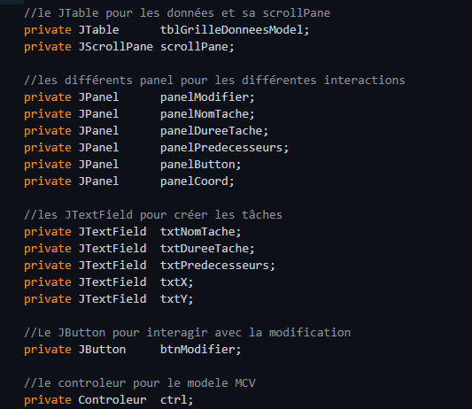
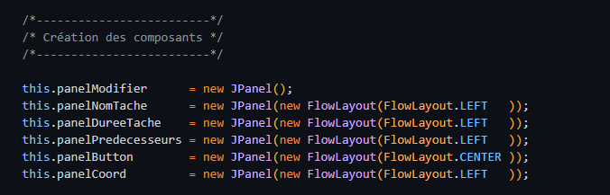
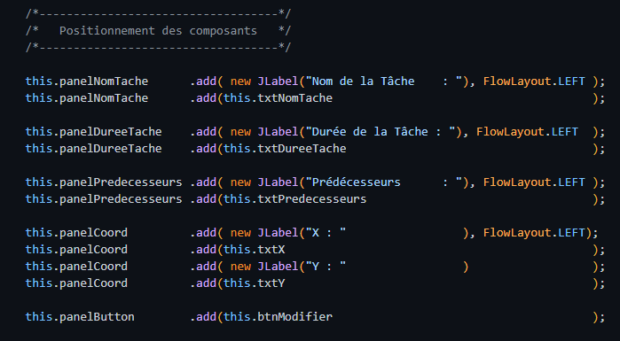
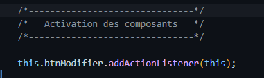
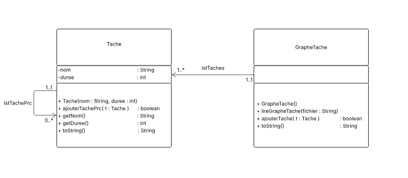

Description du projet
La méthode des Potentiels et antécédents Métra (MPM) est une technique de planification pour gérer des projets complexes. Elle permet de déterminer la durée minimale d’un projet et les dates optimales de chaque tâche, en tenant compte des dépendances et contraintes.
- Représentation graphique : chaque tâche est un sommet relié par des arcs représentant les antériorités.
- Calcul des dates : calcul des dates au plus tôt et au plus tard pour chaque tâche.
- Chemin critique : ensemble des tâches sans marge de retard possible.
Compétence 1 : Réaliser un développement d'application
Qualité du code


Il élabore des conceptions simples en respectant les besoins du client

5. Il développe des interfaces utilisateurs en respectant des normes





Compétence 2 : Optimiser des applications informatiques
4. Il est capable de s’appuyer sur des schémas de raisonnement (CE 3).

Compétence 6 : Travailler dans une équipe informatique
Collaboration avec les membres de l'équipe, utilisation de Git pour le versionning, communication et organisation du travail en groupe.